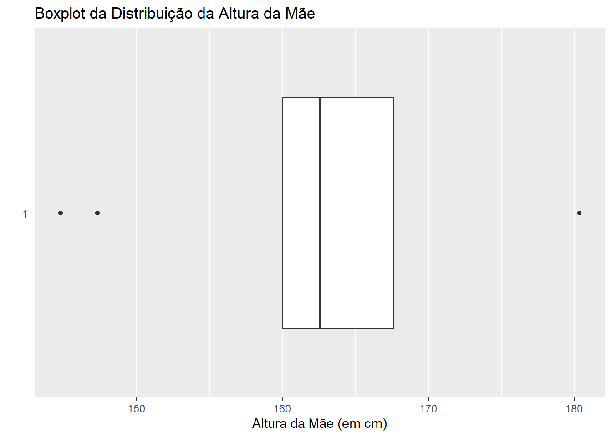
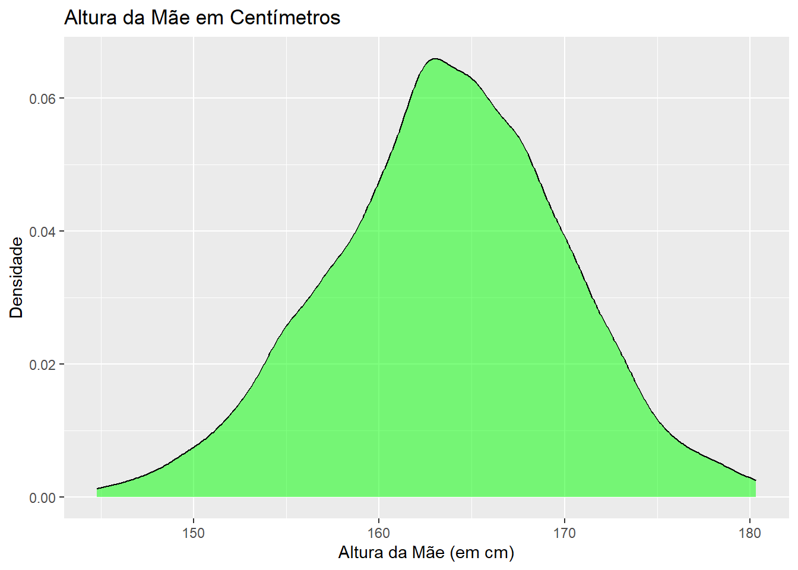

library(haven)
library(dplyr)
library(ggplot2)
library(lmtest)
library(zoo)
library(GGally)Trabalho de Estatística 02 - Análise de Correlação e Regressão Linear Simples
1. Lendo e Analisando os dados
1.1. Importando bibliotecas/pacotes necessários
1.2. Carregando base de dados
dados = read_dta("datasets/chdsmetric.dta")1.3. Selecionandos as variáveis de interesse
dados =
dados %>%
select(gestwks, mageyrs, mheightcm, bwtkg)
knitr::kable(head(dados), caption="Primeiras linhas da base de dados")| gestwks | mageyrs | mheightcm | bwtkg |
|---|---|---|---|
| 37 | 33 | 167.64 | 3.31 |
| 41 | 28 | 160.02 | 3.63 |
| 39 | 32 | 154.94 | 3.40 |
| 39 | 27 | 172.72 | 3.18 |
| 37 | 32 | 170.18 | 2.40 |
| 43 | 30 | 160.02 | 3.90 |
1.4. a) Análises Descritivas
1.4.1. Resumos estatísticos das variáveis
summary(dados) gestwks mageyrs mheightcm bwtkg
Min. :29.00 Min. :15.00 Min. :144.8 Min. :1.500
1st Qu.:39.00 1st Qu.:21.00 1st Qu.:160.0 1st Qu.:3.080
Median :40.00 Median :25.00 Median :162.6 Median :3.450
Mean :39.77 Mean :25.86 Mean :163.7 Mean :3.409
3rd Qu.:41.00 3rd Qu.:29.00 3rd Qu.:167.6 3rd Qu.:3.720
Max. :48.00 Max. :42.00 Max. :180.3 Max. :5.170 1.4.2. Boxplots para visualizar a distribuição dos dados
Variável gestwks
ggplot(dados, aes(x = gestwks, y = factor(1))) +
geom_boxplot() +
xlab("Idade Gestacional (em Semanas)") +
ylab("") +
ggtitle("Boxplot da Distribuição da Idade Gestacional em Semanas")Com base no boxplot acima, da Distribuição da idade Gestacional em Semanas, é possível interpretar que o boxplot é simétrico com 3(três) discrepantes superiores e 4(quatro) inferiores, ou seja, indica a existência de valores extremos na amostra, que podem impactar na análise dos dados, pois não seguem a mesma tendência da maioria dos dados que se encontra perto do segundo quartil que é a mediana. É importante avaliar sua influência antes de tomar decisões baseadas nas informações contidas no gráfico.
Variável mageyrs
ggplot(dados, aes(x = mageyrs, y = factor(1))) +
geom_boxplot() +
xlab("Idade da Mãe (em Anos)") +
ylab("") +
ggtitle("Boxplot da Distribuição da Idade da Mãe")Sobre o boxplot acima, da Distribuição da Idade da Mãe, é correto afirmar que o mesmo é simétrico e não possui discrepantes inferiores e apenas 1(um) discrepante superior, ou seja, indica a existência de valores extremos na amostra, que podem impactar na análise dos dados, pois não seguem a mesma tendência da maioria dos dados que se encontra perto do segundo quartil que é a mediana. É importante avaliar sua influência antes de tomar decisões baseadas nas informações contidas no gráfico.
Variável mheightcm
ggplot(dados, aes(x = mheightcm, y = factor(1))) +
geom_boxplot() +
xlab("Altura da Mãe (em cm)") +
ylab("") +
ggtitle("Boxplot da Distribuição da Altura da Mãe")
Com base no boxplot acima, da Distribuição da Altura da Mãe, é possível interpretar que o boxplot é assimétrico positivo, ou seja, quando a linha da mediana está próxima ao primeiro quartil. Também é possível inferir que o boxplot possui 1(um) discrepante superior e 2(dois) discrepantes inferiores, isso indica a existência de valores extremos na amostra, que podem impactar na análise dos dados, pois não seguem a mesma tendência da maioria dos dados que se encontra perto do segundo quartil que é a mediana.
Variável bwtkg
ggplot(dados, aes(x = bwtkg, y = factor(1))) +
geom_boxplot() +
xlab("Peso da Criança (em kg)") +
ylab("") +
ggtitle("Boxplot da Distribuição do peso da criança ao nascer")Com base no boxplot acima, da Distribuição do peso da criança ao nascer, é possível interpretar que o boxplot é assimétrico negativo, ou seja, quando a linha da mediana está próxima ao terceito quartil. Também é possível inferir que o boxplot possui 5(cinco) discrepantes superiors e 4(quatro) inferiores, isso indica a existência de valores extremos na amostra, que podem impactar na análise dos dados, pois não seguem a mesma tendência da maioria dos dados que se encontra perto do segundo quartil que é a mediana.
1.4.3. Distribuição univariada para cada variável
Variável gestwks
ggplot(data = dados, aes(x = gestwks)) +
geom_density(fill = "blue", alpha = 0.5) +
ggtitle("Idade Gestacional em Semanas") +
xlab("Idade Gestacional (em Semanas)") +
ylab("Densidade")Variável mageyrs
ggplot(data = dados, aes(x = mageyrs)) +
geom_density(fill = "red", alpha = 0.5) +
ggtitle("Idade da Mãe em Anos") +
xlab("Idade da Mãe (em Anos)") +
ylab("Densidade")Variável mheightcm
ggplot(data = dados, aes(x = mheightcm)) +
geom_density(fill = "green", alpha = 0.5) +
ggtitle("Altura da Mãe em Centímetros") +
xlab("Altura da Mãe (em cm)") +
ylab("Densidade")
Variável bwtkg
ggplot(data = dados, aes(x = bwtkg)) +
geom_density(fill = "purple", alpha = 0.5) +
ggtitle("Peso da Criança ao Nascer em Quilogramas") +
xlab("Peso da Criança ao Nascer (em kg)") +
ylab("Densidade")
1.4.4. Dispersão bivariada para cada variável
Variável gestwks
ggplot(dados, aes(x = gestwks, y = bwtkg)) +
geom_point() +
geom_smooth(method = "lm", formula = y ~ x, se = FALSE) +
labs(x = "Idade gestacional (em Semanas)", y = "Peso ao nascer (em kg)")Variável mageyrs
ggplot(dados, aes(x = mageyrs, y = bwtkg)) +
geom_point() +
geom_smooth(method = "lm", formula = y ~ x, se = FALSE) +
labs(x = "Idade da mãe (em Anos)", y = "Peso ao nascer (em kg)")Variável mheightcm
ggplot(dados, aes(x = mheightcm, y = bwtkg)) +
geom_point() +
geom_smooth(method = "lm", formula = y ~ x, se = FALSE) +
labs(x = "Altura da mãe (em cm)", y = "Peso ao nascer (em kg)")1.4.5. Matriz de correlação entre as variáveis
A matriz de correlação mostra a relação linear entre as variáveis. Os valores na diagonal principal (1) indicam que a correlação entre uma variável e ela mesma é de 100%, o que é esperado.
As correlações entre as variáveis são medidas pelos valores fora da diagonal principal. Valores próximos a 1 indicam forte correlação positiva, valores próximos a -1 indicam forte correlação negativa e valores próximos a 0 indicam baixa ou nenhuma correlação linear.
cor(dados) gestwks mageyrs mheightcm bwtkg
gestwks 1.000000000 0.0034133194 0.04764929 0.4259589231
mageyrs 0.003413319 1.0000000000 0.01748618 0.0009591992
mheightcm 0.047649294 0.0174861828 1.00000000 0.2025445934
bwtkg 0.425958923 0.0009591992 0.20254459 1.00000000001.5. b) Conclusões e analises sobre os resultados obtidos
Matrix de scatterplot para todas as variáveis
A matrix de scatterplot é uma representação visual que mostra a relação entre duas ou mais variáveis quantitativas. É composta por vários gráficos de dispersão bivariados, onde cada par de variáveis é plotado em um gráfico separado. Essa representação permite analisar rapidamente a relação entre todas as variáveis de interesse em um único gráfico, o que pode ser útil na investigação de relações entre variáveis em conjunto.
pairs(dados
[, c("gestwks", "mageyrs", "mheightcm", "bwtkg")],
pch = 21,
bg = c("blue", "red", "green", "yellow"))ggpairs(dados)Com base nas análises realizadas, é possível identificar algumas tendências na relação entre as variáveis gestwks (idade gestacional), mageyrs (idade da mãe) e mheightcm (altura da mãe) com a variável de resultado bwtkg (peso ao nascer).
A partir da matrix de correlação, dos scatterplots e dos demais gráficos, podemos ver que existe uma correlação positiva moderada entre o peso ao nascer da criança (bwtkg) e a idade gestacional (gestwks), com um valor de correlação de 0,43. Isso significa que, em geral, quanto maior a idade gestacional, maior é o peso ao nascer da criança.
Já a correlação entre a idade da mãe (mageyrs) e o peso ao nascer da criança (bwtkg) é muito baixa, com um valor de correlação de apenas 0,001. Isso sugere que a idade da mãe não tem uma influência significativa sobre o peso ao nascer da criança.
A altura da mãe (mheightcm) também tem uma correlação positiva moderada com o peso ao nascer da criança (bwtkg), com um valor de correlação de 0,20. Isso indica que, em geral, quanto maior a altura da mãe, maior é o peso ao nascer da criança.
Em conclusão, o fator mais relevante ou que melhor pode prever o peso ao nascer da criança é a idade gestacional (gestwks), seguido pela altura da mãe (mheightcm). A idade da mãe (mageyrs) parece ter uma influência muito baixa sobre o peso ao nascer da criança.
Gráfico de dispersão com curva lowess entre gestwks e bwtkg
ggplot(data = dados, aes(x = gestwks, y = bwtkg)) +
geom_point() +
geom_smooth(method = "loess", formula = y ~ x) +
ggtitle("Gráfico de Dispersão entre gestwks e bwtkg com Curva Lowess") +
xlab("Idade Gestacional (em Semanas)") +
ylab("Peso ao Nascer (em kg)")2. Análises de Regressão Linear Simples completas
2.1. Modelo de regressão linear simples para gestwks
Modelo
model1 <- lm(bwtkg ~ gestwks, data = dados)
summary(model1)
Call:
lm(formula = bwtkg ~ gestwks, data = dados)
Residuals:
Min 1Q Median 3Q Max
-1.43502 -0.28249 0.01492 0.28621 1.50992
Coefficients:
Estimate Std. Error t value Pr(>|t|)
(Intercept) -1.066189 0.365473 -2.917 0.00365 **
gestwks 0.112530 0.009179 12.259 < 2e-16 ***
---
Signif. codes: 0 '***' 0.001 '**' 0.01 '*' 0.05 '.' 0.1 ' ' 1
Residual standard error: 0.4486 on 678 degrees of freedom
Multiple R-squared: 0.1814, Adjusted R-squared: 0.1802
F-statistic: 150.3 on 1 and 678 DF, p-value: < 2.2e-16Análise do Modelo
R-squared: 0.1814, indica que aproximadamente 18% da variação na variável dependente bwtkg pode ser explicada pelo modelo de regressão linear simples com gestwks como variável independente.
Coeficiente da variável independente gestwks: 0.112530, significa que a cada semana a mais de gestação, o peso ao nascer é previsto aumentar em aproximadamente 0,1125 kg.
p-value: < 2.2e-16, indica que a relação entre gestwks e bwtkg é estatisticamente significativa.
Calculando Intervalo de confiança
confint1 <- confint(model1)
confint1 2.5 % 97.5 %
(Intercept) -1.78378433 -0.3485940
gestwks 0.09450691 0.1305536Intervalo de confiança de 0.09450691 a 0.1305536, siguinifica que o valor mínimo previsto é 0.09450691 e o valor máximo previsto é 0.1305536. Isso significa que, com 95% de confiança, o verdadeiro valor do coeficiente está entre esses dois valores.
Verificando a linearidade
shapiro.test(model1$residuals)
Shapiro-Wilk normality test
data: model1$residuals
W = 0.99716, p-value = 0.2848O teste de Shapiro-Wilk de normalidade sugere que não há evidências suficientes para rejeitar a hipótese de que os resíduos sejam normais, já que o p-valor é de 0,2848, o que é maior que o nível de significância convencional de 0,05. Portanto, a linearidade não é rejeitada com base nesse teste, mas ela pode ser comprovada ao abservar o gráfico de dispersão bivariada dá variável gestwks onde é possível observar uma tendência clara de crescimento.
Verificando a homocedasticidade
bptest(model1)
studentized Breusch-Pagan test
data: model1
BP = 2.2613, df = 1, p-value = 0.1326O teste studentized Breusch-Pagan apresentou um p-value de 0,1326, o que é maior que o nível de significância de 0,05, sugerindo que não há evidências contra a hipótese de homocedasticidade. Isso indica que a variação dos resíduos é constante ao longo da série temporal
Verificando a normalidade dos resíduos
shapiro.test(model1$residuals)
Shapiro-Wilk normality test
data: model1$residuals
W = 0.99716, p-value = 0.2848O teste Shapiro-Wilk de normalidade dos resíduos apresentou um p-value de 0,2848, o que é maior que o nível de significância de 0,05, sugerindo que não há evidências contra a hipótese de que os resíduos sejam normalmente distribuídos. Isso indica que a distribuição dos resíduos é consistente com a normalidade.
Verificando a independência dos erros
dwtest(model1)
Durbin-Watson test
data: model1
DW = 2.018, p-value = 0.5936
alternative hypothesis: true autocorrelation is greater than 0O teste Durbin-Watson apresentou um p-value de 0,5936, o que é maior que o nível de significância de 0,05, sugerindo que não há evidências contra a hipótese de independência dos erros. Isso indica que os erros são independentes uns dos outros, o que é uma suposição importante para a validade dos resultados do modelo.
2.2. Modelo de regressão linear simples para mageyrs
Modelo
model2 <- lm(bwtkg ~ mageyrs, data = dados)
summary(model2)
Call:
lm(formula = bwtkg ~ mageyrs, data = dados)
Residuals:
Min 1Q Median 3Q Max
-1.90974 -0.32939 0.03974 0.31133 1.76000
Coefficients:
Estimate Std. Error t value Pr(>|t|)
(Intercept) 3.407e+00 9.204e-02 37.016 <2e-16 ***
mageyrs 8.699e-05 3.483e-03 0.025 0.98
---
Signif. codes: 0 '***' 0.001 '**' 0.01 '*' 0.05 '.' 0.1 ' ' 1
Residual standard error: 0.4958 on 678 degrees of freedom
Multiple R-squared: 9.201e-07, Adjusted R-squared: -0.001474
F-statistic: 0.0006238 on 1 and 678 DF, p-value: 0.9801Análise do Modelo
R-squared: 9.201e-07, indica que aproximadamente 0% da variação na variável dependente bwtkg pode ser explicada pelo modelo de regressão linear simples com mageyrs como variável independente.
Coeficiente da variável independente mageyrs: 8.699e-05, significa que a cada ano a mais de idade da mãe, o peso ao nascer é previsto aumentar em aproximadamente 0,000087 kg.
p-value: 0.98, indica que a relação entre mageyrs e bwtkg não é estatisticamente significativa.
Calculando Intervalo de confiança
confint2 <- confint(model2)
confint2 2.5 % 97.5 %
(Intercept) 3.226237166 3.587676148
mageyrs -0.006751352 0.006925325Intervalo de confiança de -0.006751352 a 0.006925325, significa que o valor mínimo previsto é -0.006751352 e o valor máximo previsto é 0.006925325. Isso significa que, com 95% de confiança, o verdadeiro valor do coeficiente está entre esses dois valores.
Verificando a linearidade
shapiro.test(model2$residuals)
Shapiro-Wilk normality test
data: model2$residuals
W = 0.99644, p-value = 0.1325O teste Shapiro-Wilk de normalidade sugere que não há evidências suficientes para rejeitar a hipótese de que os resíduos sejam normais, com um p-valor de 0,1325, maior que o nível de significância de 0,05. Assim, a linearidade não é rejeitada por este teste, no entanto, conclui-se que não é linear pois ao abservar o gráfico de dispersão bivariada dá variável mageyrs é posspivel observar que não existe uma tendência clara de crescimento ou decréscimo.
Verificando a homocedasticidade
bptest(model2)
studentized Breusch-Pagan test
data: model2
BP = 0.34671, df = 1, p-value = 0.556O teste studentized Breusch-Pagan apresentou um p-value de 0,556, o que é maior que o nível de significância de 0,05, sugerindo que não há evidências contra a hipótese de homocedasticidade. Isso indica que a variação dos resíduos é constante ao longo da série temporal.
Verificando a normalidade dos resíduos
shapiro.test(model2$residuals)
Shapiro-Wilk normality test
data: model2$residuals
W = 0.99644, p-value = 0.1325O teste Shapiro-Wilk de normalidade dos resíduos apresentou um p-value de 0,1325, o que é maior que o nível de significância de 0,05, sugerindo que não há evidências contra a hipótese de que os resíduos sejam normalmente distribuídos. Isso indica que a distribuição dos resíduos é consistente com a normalidade.
Verificando a independência dos erros
dwtest(model2)
Durbin-Watson test
data: model2
DW = 1.9863, p-value = 0.4279
alternative hypothesis: true autocorrelation is greater than 0O teste Durbin-Watson apresentou um p-value de 0,4279, o que é maior que o nível de significância de 0,05, sugerindo que não há evidências contra a hipótese de independência dos erros. Isso indica que os erros são independentes uns dos outros, o que é uma suposição importante para a validade dos resultados do modelo.
2.3. Modelo de regressão linear simples para mheightcm
Modelo
model3 <- lm(bwtkg ~ mheightcm, data = dados)
summary(model3)
Call:
lm(formula = bwtkg ~ mheightcm, data = dados)
Residuals:
Min 1Q Median 3Q Max
-1.89167 -0.31387 0.00833 0.31884 1.81874
Coefficients:
Estimate Std. Error t value Pr(>|t|)
(Intercept) 0.805332 0.483849 1.664 0.0965 .
mheightcm 0.015910 0.002954 5.386 9.97e-08 ***
---
Signif. codes: 0 '***' 0.001 '**' 0.01 '*' 0.05 '.' 0.1 ' ' 1
Residual standard error: 0.4855 on 678 degrees of freedom
Multiple R-squared: 0.04102, Adjusted R-squared: 0.03961
F-statistic: 29 on 1 and 678 DF, p-value: 9.968e-08Análise do Modelo
R-squared: 0.04102, indica que aproximadamente 4.1% da variação na variável dependente bwtkg pode ser explicada pelo modelo de regressão linear simples com mheightcm como variável independente.
Coeficiente da variável independente mheightcm: 0.015910, significa que a cada centímetro a mais na altura da mãe, o peso ao nascer é previsto aumentar em aproximadamente 0.015910 kg.
p-value: 9.97e-08, indica que a relação entre mheightcm e bwtkg é estatisticamente significativa, com p-value menor que 0.05.
Calculando Intervalo de confiança
confint3 <- confint(model3)
confint3 2.5 % 97.5 %
(Intercept) -0.14469167 1.75535468
mheightcm 0.01010959 0.02171057Intervalo de confiança de 0.01010959 a 0.02171057, significa que o valor mínimo previsto é 0.01010959 e o valor máximo previsto é 0.02171057. Isso significa que, com 95% de confiança, o verdadeiro valor do coeficiente está entre esses dois valores.
Verificando a linearidade
shapiro.test(model3$residuals)
Shapiro-Wilk normality test
data: model3$residuals
W = 0.99684, p-value = 0.2048O teste de Shapiro-Wilk de normalidade dos resíduos apresentou um p-value de 0,2048, o que é maior que o nível de significância convencional de 0,05. Isso sugere que não há evidências suficientes para rejeitar a hipótese de que os resíduos sejam normais, mas ela pode ser comprovada ao abservar o gráfico de dispersão bivariada dá variável mheightcm onde é posspivel observar uma tendência leve de crescimento.
Verificando a homocedasticidade
bptest(model3)
studentized Breusch-Pagan test
data: model3
BP = 0.2296, df = 1, p-value = 0.6318O teste studentized Breusch-Pagan apresentou um p-value de 0,6318, o que é maior que o nível de significância de 0,05, sugerindo que não há evidências contra a hipótese de homocedasticidade. Isso indica que a variação dos resíduos é constante ao longo da série temporal.
Verificando a normalidade dos resíduos
shapiro.test(model3$residuals)
Shapiro-Wilk normality test
data: model3$residuals
W = 0.99684, p-value = 0.2048O teste Shapiro-Wilk de normalidade dos resíduos apresentou um p-value de 0,2848, o que é maior que o nível de significância de 0,05, sugerindo que não há evidências contra a hipótese de que os resíduos sejam normalmente distribuídos. Isso indica que a distribuição dos resíduos é consistente com a normalidade.
Verificando a independência dos erros
dwtest(model3)
Durbin-Watson test
data: model3
DW = 2.0357, p-value = 0.6804
alternative hypothesis: true autocorrelation is greater than 0O teste Durbin-Watson apresentou um p-value de 0,6804, o que é maior que o nível de significância de 0,05, sugerindo que não há evidências contra a hipótese de independência dos erros. Isso indica que os erros são independentes uns dos outros, o que é uma suposição importante para a validade dos resultados do modelo.
2.4. Conclusões gerais sobre os resultados dos modelos
De acordo com os resultados dos 3 modelos, o fator mais relevante/associado que pode melhor prever a variável dependente “bwtkg” é “gestwks”. Isso porque o coeficiente “gestwks” apresenta o maior valor de t (12.259) e o menor p-valor (menor que 2.2x10^-16) em comparação com os outros fatores “mageyrs” e “mheightcm”. Além disso, o modelo com “gestwks” como variável explicativa apresenta o maior valor de R-quadrado ajustado (0,1802).
2.5. Desenvolvendo algumas previsões
Qual seria o peso da criança ao nascer esperado para uma gestação de 24 semanas?
gestwks_new <- 24
predict(model1, newdata = data.frame(gestwks = gestwks_new)) 1
1.634537 A previsão acima indica que, utilizando o modelo 1, o valor previsto da variável dependente “bwtkg” é de 1.634537 kg quando considerada uma gestação de 24 semanas. Isso significa que, segundo esse modelo, é esperado que um bebê nasça com cerca de 1.63 kg caso a gestação dure 20 semanas. Cabe ressaltar que essa previsão é baseada nas relações entre as variáveis presentes no modelo e não leva em conta outras informações importantes que possam influenciar o peso ao nascer.
Qual seria o peso da criança ao nascer esperado para uma criança nascida de uma mãe com idade de 22 anos?
mageyrs_new = 22
predict(model2, newdata = data.frame(mageyrs = mageyrs_new)) 1
3.40887 A previsão acima indica que, utilizando o modelo 2, o valor previsto da variável dependente “bwtkg” é de 3.40887 kg quando considerado que a mãe possui 22 anos de idade. Isso significa que, segundo esse modelo, é esperado que um bebê nasça com cerca de 3.41 kg caso a mãe possua 22 anos de idade. Cabe ressaltar que essa previsão é baseada nas relações entre as variáveis presentes no modelo e não leva em conta outras informações importantes que possam influenciar o peso ao nascer.
Qual seria o peso da criança ao nascer esperado para uma criança nascida de uma mãe com altura de 1.73 m?
mheightcm_new <- 173
predict(model3, newdata = data.frame(mheightcm = mheightcm_new)) 1
3.557776 A previsão acima indica que, utilizando o modelo 3, o valor previsto da variável dependente “bwtkg” é de 3.557776 kg quando considerado que a mãe possui 1.73cm de altura. Isso significa que, segundo esse modelo, é esperado que um bebê nasça com cerca de 3.56 kg caso a mãe possua 1.73cm de altura. Cabe ressaltar que essa previsão é baseada nas relações entre as variáveis presentes no modelo e não leva em conta outras informações importantes que possam influenciar o peso ao nascer.